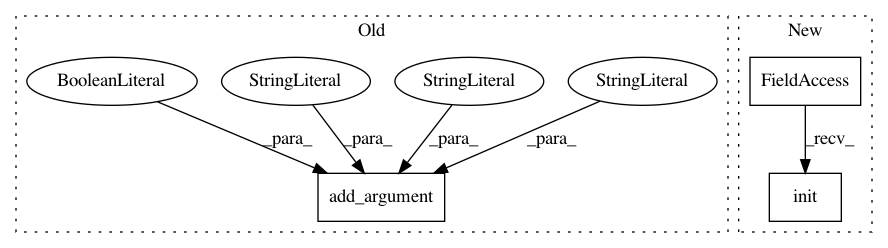

a50128079d616cc25630471ad01d09537d38657d,python/ray/tune/examples/tf_distributed_keras_example.py,,,#,65
Before Change
type=int,
default=2,
help="Sets number of workers for training.")
parser.add_argument(
"--use-gpu",
action="store_true",
default=False,
help="enables CUDA training")
parser.add_argument(
"--cluster",
action="store_true",
default=False,
After Change
options = dict(address="auto")
else:
options = dict(num_cpus=4)
ray.init(**options)
tf_trainable = DistributedTrainableCreator(
train_mnist,
num_workers=args.num_workers,
num_workers_per_host=args.num_workers_per_host,
In pattern: SUPERPATTERN
Frequency: 3
Non-data size: 3
Instances
Project Name: ray-project/ray
Commit Name: a50128079d616cc25630471ad01d09537d38657d
Time: 2020-11-16
Author: khu@linkedin.com
File Name: python/ray/tune/examples/tf_distributed_keras_example.py
Class Name:
Method Name:
Project Name: catalyst-cooperative/pudl
Commit Name: c6392ec3c54f6bdbdd81d556286890752363cda5
Time: 2019-07-03
Author: zane.selvans@catalyst.coop
File Name: src/pudl/datastore/cli.py
Class Name:
Method Name: parse_command_line
Project Name: polyaxon/polyaxon
Commit Name: b20fc24180a7591d6e1850ebb0fc2812205bdfdf
Time: 2020-06-22
Author: mouradmourafiq@gmail.com
File Name: examples/in_cluster/kubeflow/tfjob/run.py
Class Name:
Method Name: